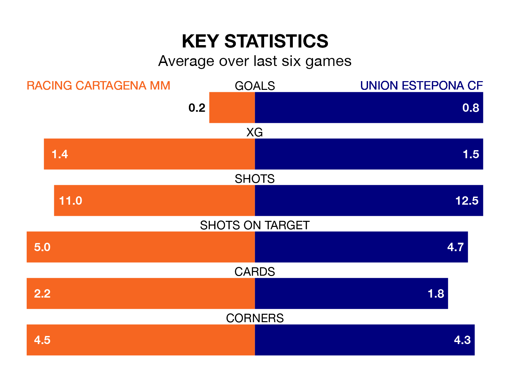

Two of the Segunda División RFEF Group 4's meanest defences go head-to-head on Sunday, when Racing Cartagena MM host Union Estepona CF.
Only two sides – Águilas and Sevilla B – have conceded fewer goals than Racing Cartagena MM to date: the home side have let in just 16 goals in 23 games.
Union Estepona have conceded 17 goals in 23 games, giving them the joint-fourth tightest back line so far this season.
Key to Racing Cartagena MM's home form has been Iván Martínez Martí, who has allowed 0.59 goals past him per 90 minutes, compared to 0.64 for Razak Brimah in the opposite net.
Racing Cartagena MM are in disappointing form in the Segunda División RFEF Group 4, with no wins and five draws from their last six games.
With a win and three draws over that period, Union Estepona's form is slightly better – they have taken six points from 18, compared to the home team's five.
The visitors are sixth in the table after 23 games, of which they have won 10 and drawn six, earning 36 points.
Racing Cartagena MM are five places behind Union Estepona in 11th, with six wins and 10 draws putting them on 28 points.
Racing Cartagena MM's last match was on February 17, a 0-0 draw against Manchego.
Union Estepona drew 1-1 with Linense last time out, on Sunday, with Robin Charles Hughes Lafarge on the scoresheet.
Updated: 10:08 (UTC), 23/02/24